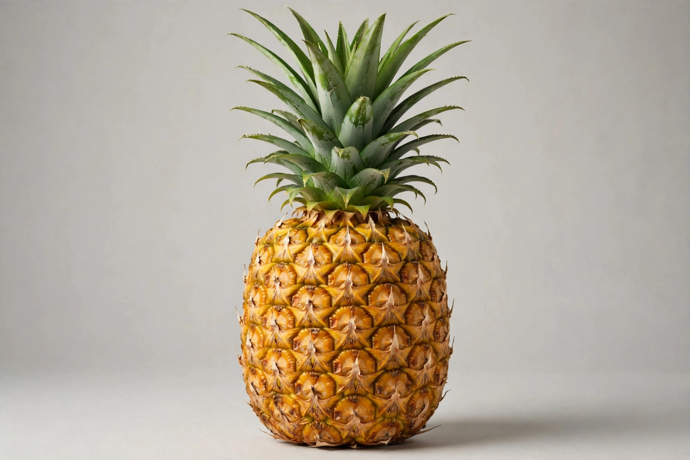

Pineapple
From Wikipedia, the free encyclopedia

The pineapple (Ananas comosus) is a tropical plant in the bromeliad family and its multiple fruit — a coalescence of many berries fused around a central core, crowned with a rosette of stiff leaves. Native to South America, probably the Paraná–Paraguay basin, it was named by Europeans for its resemblance to a pine cone combined with an apple's flesh; the Tupi word nanas ("excellent fruit") survives in its scientific name and in many languages. Columbus encountered it on Guadeloupe in 1493. Costa Rica is the leading fresh exporter, and the sweet, low-acid MD2 cultivar dominates world trade.
History
Pineapple became a sensation in Europe, where it symbolised hospitality and wealth; growing a single fruit in a heated "pinery" cost a fortune, and pineapples were rented out as table decorations. Canning transformed it into a mass food: James Dole built the Hawaiian industry in the early 20th century, and Hawaii supplied most of the world's canned pineapple before production shifted to Southeast Asia and Latin America. Del Monte's MD2, released in the 1990s, standardised fresh exports thanks to its sweetness, golden colour and shelf life.
Cultivation and biology
Pineapples grow as low rosettes; the top ("crown") of a fruit can be planted to grow a new plant, and slips and suckers from the mother plant give ratoon crops. Flowering can be induced commercially with ethylene-releasing compounds so whole fields ripen together. Fresh pineapple contains bromelain, a protein-digesting enzyme — which is why fresh pineapple prevents gelatin from setting and can tenderise (or over-tenderise) meat marinades; canning heat destroys the enzyme.
Uses
Beyond fresh and canned fruit and juice, pineapple appears in dishes from Hawaiian pizza (a Canadian invention, and a famously divisive one) to Thai curries and Mexican tacos al pastor, where its sweetness pairs with pork and chilli. Pineapple fibre (piña cloth) from the leaves is woven in the Philippines into formal garments. The fruit is a good source of vitamin C and manganese.